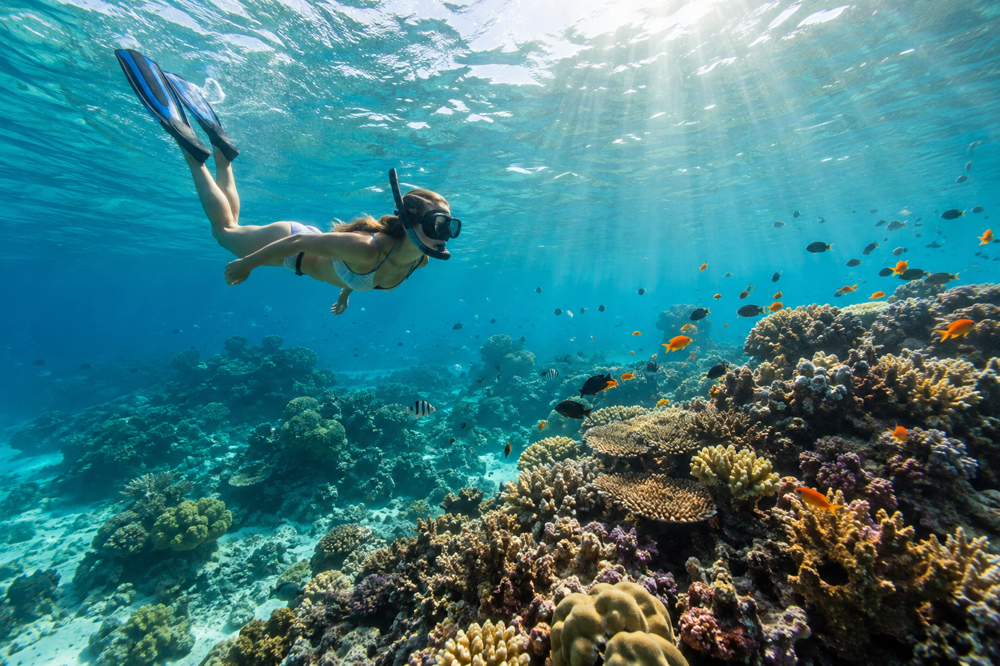
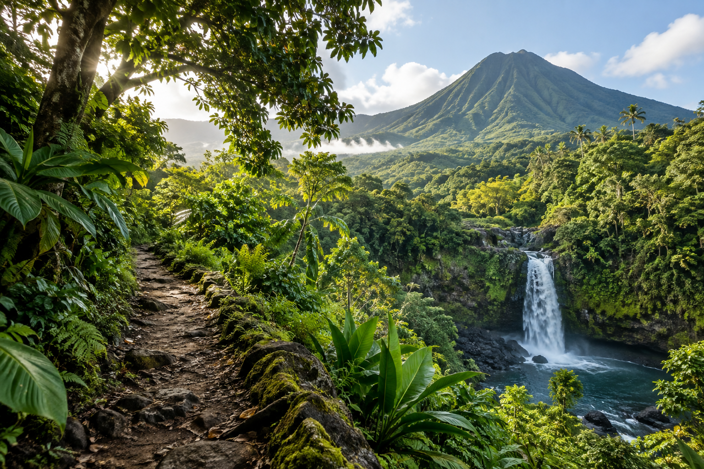

Beaches & water
Enjoy the island's beaches, go snorkeling, or take a chartered fishing trip.
Taniti City has nearby white sandy beaches around Yellow Leaf Bay.

Enjoy the island's beaches, go snorkeling, or take a chartered fishing trip.
Taniti City has nearby white sandy beaches around Yellow Leaf Bay.

Explore rainforest hikes, zip-lining, or visits to the island's active volcano.
Discover native architecture in Taniti City, visit the local history museum and art galleries, or take a boat or bus tour.
Options include movies, bowling, an arcade, pubs, a microbrewery, and a dance club. Many activities are in Merriton Landing.